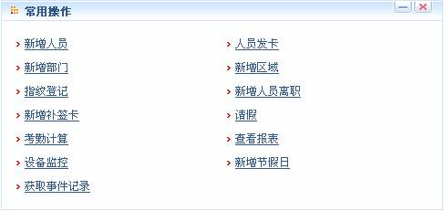
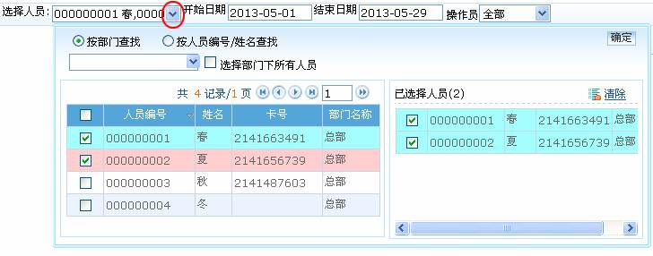
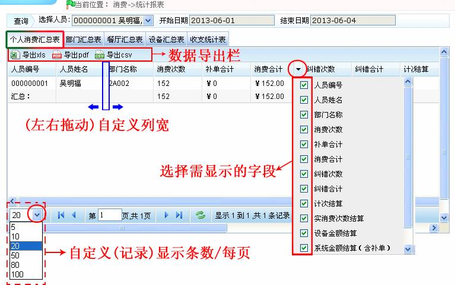

7.3 数据库管理
单击【系统设置】-【数据库管理】，进入如下图所示数据库管理页面：

系统主页面显示历史备份数据库操作记录。系统提供了备份、还原、初始化数据库功能。
 提示：将鼠标光标移动到窗口操作选择栏的图标上，系统将自动弹出该图标对应的操作提示。
提示：将鼠标光标移动到窗口操作选择栏的图标上，系统将自动弹出该图标对应的操作提示。
7.3.1备份数据库
将系统的数据库定期备份，以保证数据的安全，需要再使用备份的数据时，将数据还原即可。
备份数据库的步骤描述如下：
1、设置数据库备份路径
在【服务控制台】中选择【设置数据库备份路径】，出现如下界面：

点击【浏览】选择备份路径，点击【保存】按钮，保存设置，设置成功后系统会在该窗口中给出“设置成功！”的提示字样，如下图所示：

单击【关闭】按钮，退出窗口。
 注意：
注意：
（1）、如果不预先设置数据库的备份路径，则系统无法备份数据库（供其他计算机访问的服务器，需要在服务上预先设置备份路径）；
（2）、建议数据库备份路径不要和本系统安装路径在同一磁盘下，不要将备份路径设置到磁盘根目录下或桌面。
2、备份数据库
（1）、在数据库管理页面中，点击【备份数据库】图标，进入备份数据库页面，如下图所示：

（2）、选择立即备份、计划备份或取消计划备份。若单击选择计划备份项，则弹出如下图所示窗口：
从__开始：选择开始的日期和时间，日期和时间的选择请参见附录1常用操作中的2选择日期和3选择时间。
每隔__天：输入天数，只能为整数。设置每隔几天自动备份数据库。
（3）、设置完成后，点击【确认】按钮，开始备份，如果是立即备份，则备份后返回，计划备份则按计划执行备份。若选择的是立即备份，并单击【确定】按钮，弹出如下图所示的备份确认框：

（4）、单击【确定】按钮，开始备份，并返回数据库管理页面，此时数据库备份记录列表中的显示如下图所示：

如图所示，此时该备份记录的是否成功备份显示为“处理中”，代表系统后台正在备份数据库，稍等片刻，待备份成功后，备份数据库记录列表的信息显示如下图所示：
如图所示，此时设备备份记录的是否成功备份显示为“是”，代表备份成功。
 注意：
注意：
（1）、数据库服务器与本系统服务器必须在同一台电脑中；
（2）、建议用户在建立完人事信息、设备信息、消费信息和系统设置后立即进行数据备份；
（3）、系统暂不支持Oracle数据库备份，如需备份请使用Oracle自带工具进行备份。
7.3.2还原数据库
1、在【服务控制台】中选择【还原数据库】，出现如下界面。

2、点击【浏览】按钮，弹出如下图所示的备份文件选择列表：
3、在备份数据库列表中选择成功备份的以“.sql”为后缀的数据库文件，单击【打开】按钮，返回还原数据库窗口。点击【还原】按钮，开始还原数据库。还原成功后系统会在当前窗口中给出“数据库还原成功！”的提示字样，如下图所示：

单击【关闭】按钮，关闭窗口。
 注意：
注意：
（1）、请不要关闭数据库还原过程中弹出的任何命令行窗口；
（2）、不建议在同一台服务器上建立多个计划备份，避免加重服务器负荷。
7.3.3初始化数据库
 注意：初始化数据库是将数据恢复到系统初始状态，初始化人事信息时，原数据库中所有消费数据将被删除，请用户谨慎操作。
注意：初始化数据库是将数据恢复到系统初始状态，初始化人事信息时，原数据库中所有消费数据将被删除，请用户谨慎操作。
1、在数据库管理页面中，点击【初始化数据库】图标，进入初始化数据库页面，如下图所示：
2、单击数据类列表中每类数据前对应的选择框 ，打钩选中；可单击上级类前方的选择框
，打钩选中；可单击上级类前方的选择框 ，选中该类及其下的所有子类。也可单击全部前面的选择框
，选中该类及其下的所有子类。也可单击全部前面的选择框 ，选中所有数据类。点击【确认】按钮，完成初始化并返回。
，选中所有数据类。点击【确认】按钮，完成初始化并返回。